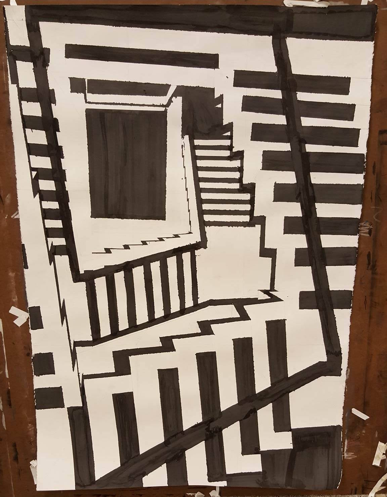
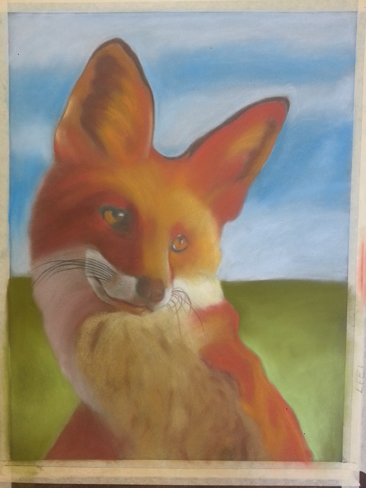
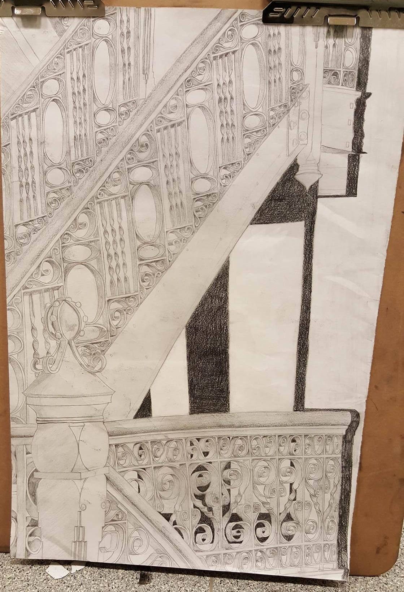
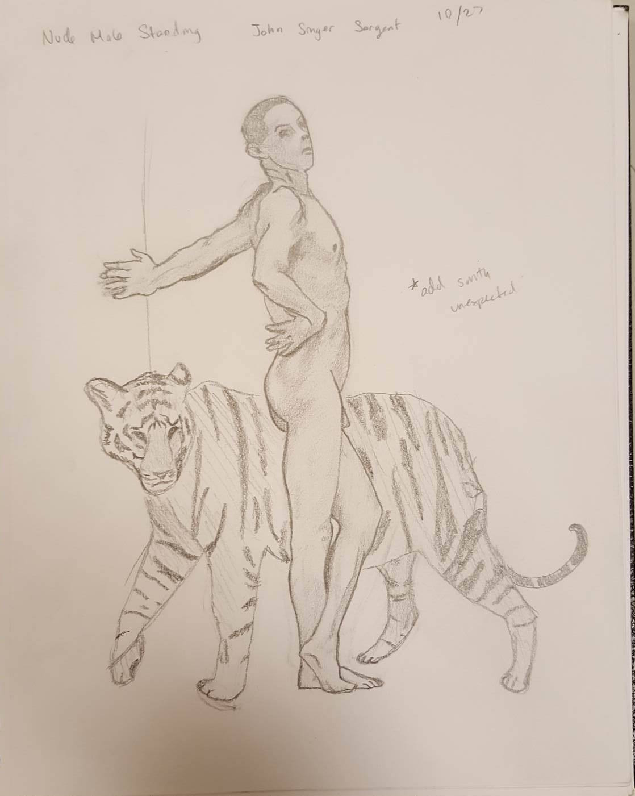
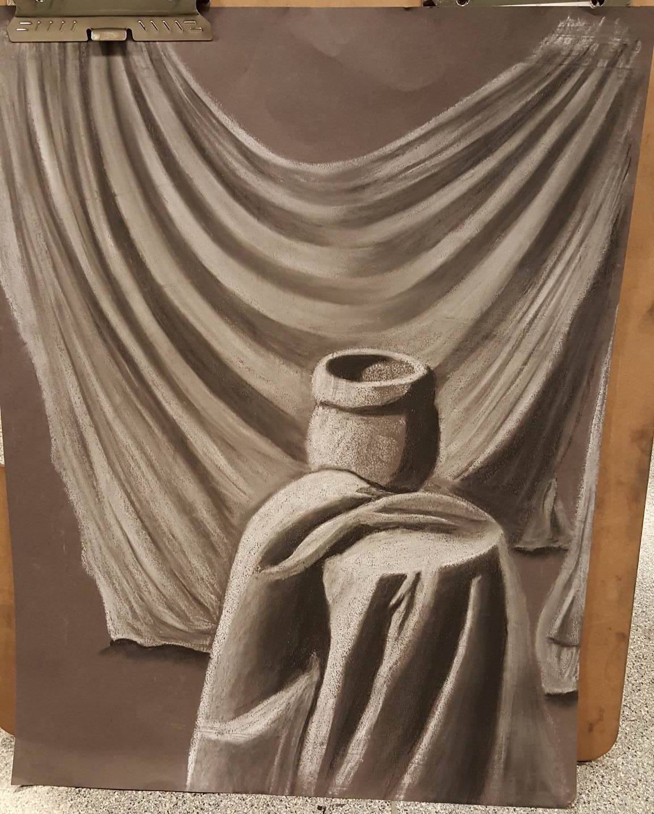
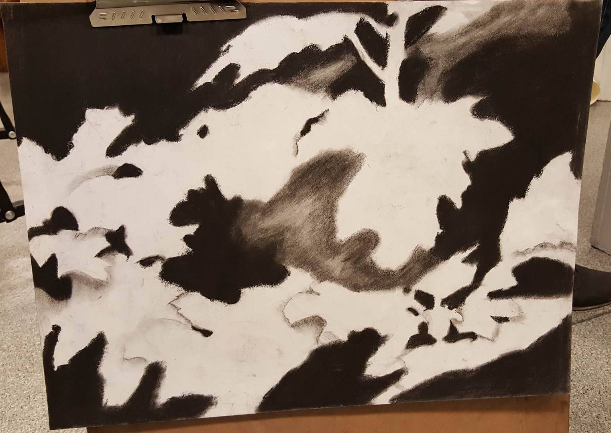

Descent
2015. Inspired by M.C. Escher's works. Done using ink.

2014. A portrait of a fox using colored pastels.

2015. A composition study using pencil and paper.

2015. A study of Nude Male Standing by John Singer Sergent. Done using pencil and paper. The tiger was added to put my own twist to it.

2015. A still life using white pastel and charcoal on grey paper.

2015. A negative space study using charcoal.